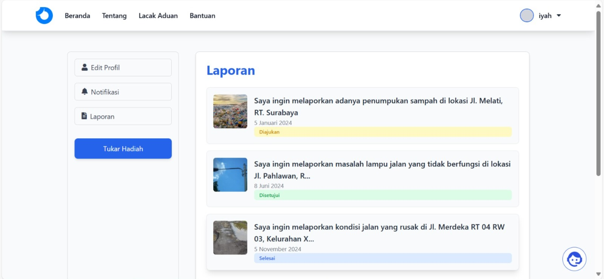
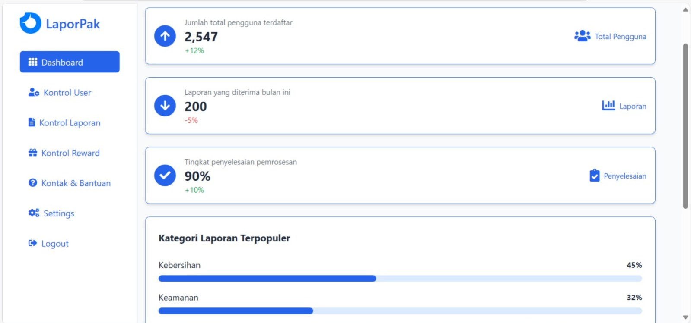

Maxy AcademyProyek tim
LaporPak
Peran
Koordinator Proyek dan Developer
Tim
8 anggota lintas divisi
Program
Virtual Internship Maxy Academy, Nov - Des 2024
Hasil
Dipresentasikan pada demo day
Tentang proyek
LaporPak adalah prototipe fungsional aplikasi untuk melaporkan masalah infrastruktur publik, lengkap dengan dashboard, formulir pelaporan, dan informasi cuaca. Proyek ini dikerjakan oleh tim 8 orang lintas divisi dalam Virtual Internship Maxy Academy, lalu dipresentasikan pada demo day.
Fitur utama
Dashboard
Formulir pelaporan infrastruktur publik
Informasi cuaca dari weather API
Integrasi API backend
Yang saya lakukan
Selain mengembangkan, saya juga memimpin tim.
Koordinasi tim
- Memimpin 8 anggota tim lintas divisi sebagai Koordinator Proyek dan Developer sampai prototipe berhasil dipresentasikan pada demo day.
Pengembangan
- Mengembangkan antarmuka dashboard dan formulir pelaporan infrastruktur publik dengan Laravel 10 dan Tailwind CSS.
- Mengintegrasikan API backend dan weather API untuk menampilkan informasi cuaca.
Teknologi
Laravel 10Tailwind CSSAPI IntegrationWeather API
Tangkapan layar

